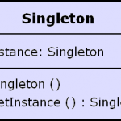

Beware of the Singleton
The Singleton design pattern is well known and used among programmers. It is so easy to use that unfortunately it often gets misused.

In Java a singleton usually looks like this:
public class Singleton { private static final Singleton INSTANCE = new Singleton(); // Private constructor prevents instantiation from other classes private Singleton() {} public static Singleton getInstance() { return INSTANCE; } }
A singleton is used, as its name implies, to make sure that only one such instance of the class exists in the application. For example “the database singleton” or “the universe”. Many application define their domain such that there are single object of various kinds and the singleton design pattern programatically enforces that. Very cool, very useful.
But there’s another side to that story. Singletons are great in making sure there is only one instance of a class, but as a side effect they also make it very easy to access that object from anywhere. If you need access to the database singleton simply type Database.getInstance(). It’s just too easy that it gets misused!
We’ve all learned C and we all know that C global variables are bad. C global variables are bad because they prevent encapsulation. When programming to C global variables it’s very hard to determine the environment or the context of the current executing code because this code depends on several globals that you’re not aware of and that could change it’s behavior. Suppose you want to call a function and its documentation says something like “before calling this function make sure to set gNum to 5, and depending on the value of gVersion the function will do this and that…” – that is, if you’re lucky you’ll have documentation to read… in some cases you have no docs at all and you’re left to either read the code or guess what global vars it uses. If I were to read such code I’d do everything that’s in my power not to use it.
So guess what? Singletons == C Global variables. They are easily accessed from anywhere in the code and so easy to define and use that they get misused just like poor global vars in C do.
But there’s another reason why Singletons are bad. They make unit-testing very hard; in some cases even impossible to do proper unit-testing.
This is a key point. Suppose you have an application that uses a database and you want to unit-test it.
class DataBean { public String getValue() { return Database.getValue(); // The Database singleton } } ... @Test public void testGetValue() { DataBean bean = new DataBean(); assertEquals(5, bean.getValue()); }
When running a unit-test you don’t want to actually connect to a real database! You really don’t want to do that! There are several reasons why, just to name a few, you want fast execution, you don’t want to test the database, you only want to test the DataBean class, you don’t want to have to prepare and clean up the database with every test you run, you don’t want other ppl executing code to mess up your database, you don’t want failing tests to leave your database in an undefined state etc.
Using singletons is exceptionally bad for unit-testing. As a side note, when writing integration tests (or system-tests) you do want to test all system component, not just single elements, so in that case you do want to use a real database however unit-tests are far more important and effective and you should start with them and test single elements only.
So what’s the alternative then? Dependency Injection. Make your data bean depend on the database and accept a database in its constructor (or in a setter for that matter). A related design patter is Program to Interfaces, not to implementation.
class DataBean { private DatabaseInterface database; // A reference to a DB interface public DataBean(DatabaseInterface d) { database = d; // Store the DB public String getValue() { return database.getValue(); } } ... @Test public void testGetValue() { // Use a mock DB implementation for testing DataBean bean = new DataBean(new MockDatabaseImplementation()); assertEquals(5, bean.getValue()); }
Conclusion: Singletons are effective making sure there’s only one of them in the application. They are hazardous because that make it too easy to use the global-variables anti-design pattern. Beware of them!
IMO using singletons doesn’t conflict with resource decoupling for unit tests. E.g You could add a default constructor to DataBean that instantiates it with the real DB:
public DataBean() {
this(Database.INSTANCE);
}
and then producrtion code uses new DataBean() and test code uses new DataBean(new new ockDatabaseImplementation());
By Hagai Cibulski on Jun 25, 2009
Hi Hagai, I agree that when used properly singletons don’t conflict with unit-tests.
Problem is that more often than not, what you’d see is that there’s an empty constructor (and only an empty one) and the singleton is hardcoded into the implementation which makes testing impossible.
I agree that when used correctly, a singleton is a powerful machanism,
By rantav on Jun 25, 2009
2 other fun aspects of the Singleton pattern you forgot to mention, are the dependency cycles that usually get created by the ease of access, and the architectural violations (lower layers calling higher layers).
Although it is possible to create dependency cycles when using DI, it is impossible to do so when you use constructor injection only. Using constructor injection only, also allows you to write immutable classes which are thread safe, and less bug prone.
By Eran on Oct 24, 2009
If I’m using a framework like Spring and have all of the beans that Spring controls as singletons (by default I think)… but I’m using all of those beans as instance variables with setters and getters, is that still considered bad for unit testing?
For example:
class A {
SingletonBeanObject B;
public B getSingletonBeanObject(){//impl}
public void setB(SingleBeanObject){//impl}
}
By Glide on Jul 1, 2010
if in your code they are not singletons then that’s fine
By Ran Tavory on Jul 1, 2010